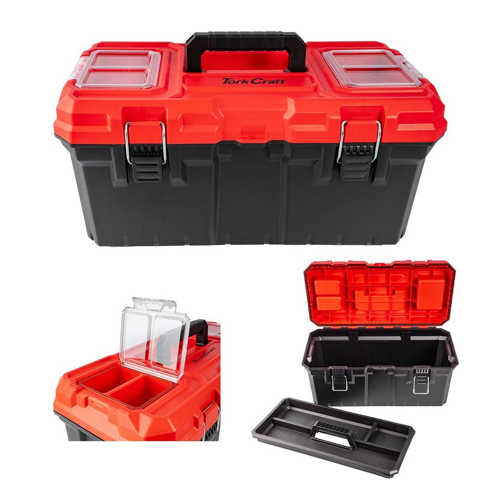
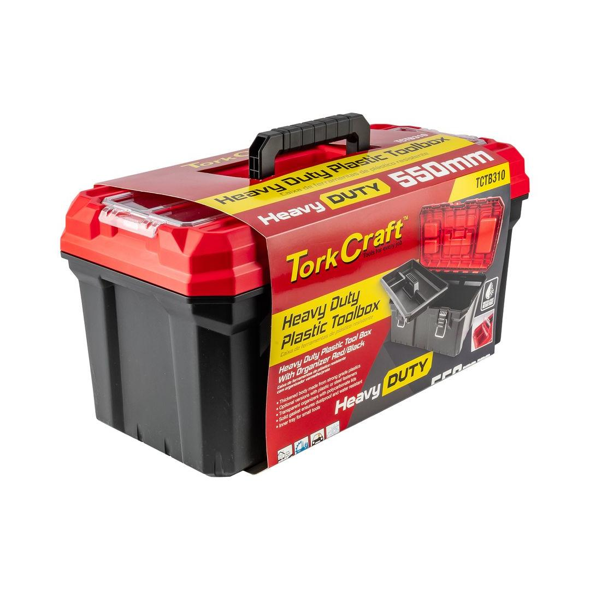

TCTB310


Length: 550mm
Colour: Red Lid with Black Body
This durable and practical tool box is designed to meet the demands of any handyman or professional. Constructed from high-quality, heavy-duty plastic, it provides robust protection for your tools against bumps, drops, and the elements. The vibrant red and black color scheme makes it easy to spot in a cluttered workshop or garage. Measuring 550mm in length, it offers ample space for a variety of hand tools, power tools, and accessories. A standout feature is the integrated top organizer, perfect for sorting small parts like screws, nails, bits, and washers, ensuring they are always within easy reach. The secure metal latches keep the lid firmly closed during transport, while a comfortable carrying handle allows for easy portability. Whether for home repairs or professional jobs, this versatile tool box is an essential storage solution for keeping your gear organized and secure.
Application: